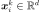
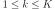
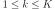
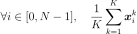
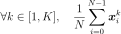
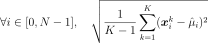
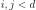
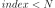

ProcessSample¶
(Source code, png, hires.png, pdf)
{kind=link}
{kind=link}
- class ProcessSample(*args)¶
Collection of fields.
- Available constructors:
ProcessSample(mesh, K, d)
ProcessSample(mesh, coll)
ProcessSample(K, field)
- Parameters
Notes
A
ProcessSamplestores a sample of fields. We note K the number of fields contained in the process sample and d the dimension of the values associated to each vertex of the common mesh .
.These fields can be generated by a stochastic process.
In the first usage, we fix the common mesh with mesh, the number of fields contained in the sample with K and the dimension of the values with d. The values of the fields are by default fixed to zero.
In the second usage, the collection of fields is filled with K copies of the given field field.
We note  the value of the field k at the vertex i. We note N the number of vertices of
 , with
, with  and .
and .Examples
Create a bi dimensional mesh as a box:
>>> import openturns as ot >>> myIndices = [10, 5] >>> myMesher = ot.IntervalMesher(myIndices) >>> lowerBound = [0.0, 0.0] >>> upperBound = [2.0, 1.0] >>> myInterval = ot.Interval(lowerBound, upperBound) >>> myMesh = myMesher.build(myInterval)
Create a second order normal porcess of dimension 3:
>>> amplitude = [5] >>> scale = [3, 3] >>> model = ot.ExponentialModel(scale, amplitude) >>> myProcess = ot.GaussianProcess(model, myMesh)
Generate a sample of different fields:
>>> n = 10 >>> mySampleFields = myProcess.getSample(n)
Duplicate the same field:
>>> myField = myProcess.getRealization() >>> n = 10 >>> mySampleFields2 = ot.ProcessSample(n, myField)
Methods
add(*args)Add a field to the collection.
Compute the centered moment field of the collection of fields.
computeEmpiricalCDF(point[, tail])Compute the empirical CDF field of the collection of fields.
Compute the kurtosis field of the collection of fields.
Compute the mean field of the collection of fields.
Compute the median field of the collection of fields.
computeQuantilePerComponent(*args)Compute the quantile field of the collection of fields.
Compute the range field of the collection of fields.
Compute the raw moment field of the collection of fields.
Compute the skewness field of the collection of fields.
Compute the spatial mean of the values of the fields.
Compute the standard deviation field of the collection of fields.
Compute the temporal mean of the values of the fields.
Compute the variance field of the collection of fields.
draw([interpolate])Draw the whole field.
Draw correlation between all marginals.
drawMarginal([index, interpolate])Draw the selected field.
drawMarginalCorrelation(i, j)Draw correlation between 2 marginals.
Accessor to the object's name.
Get the dimension of the values of fields.
getField(i)Field accessor.
getId()Accessor to the object's id.
Accessor to the underlying implementation.
getMarginal(*args)Marginal sample accessor.
getMax()Compute the max field of the collection of fields.
getMesh()Get the mesh of the fields.
getMin()Compute the min field of the collection of fields.
getName()Accessor to the object's name.
getSampleAtVertex(index)Extract sample at specific vertex of the mesh.
getSize()Get the size of the collection of fields.
Get the time grid of the fields.
setField(field, i)Field accessor.
setName(name)Accessor to the object's name.
- __init__(*args)¶
- add(*args)¶
Add a field to the collection.
- Parameters
- field
Field A new field to add. This field shares the same mesh and the same dimension as the other fields of the collection.
- field
- computeCenteredMoment(k)¶
Compute the centered moment field of the collection of fields.
- Parameters
- kint
Order of the moment.
- Returns
- moment
Field This field has the same size and the same dimension as the fields of the collection. At each vertex of the mesh, we compute the component-wise centered moment of order n.
- moment
- computeEmpiricalCDF(point, tail=False)¶
Compute the empirical CDF field of the collection of fields.
- Parameters
- pointsequence of float
The point at which all the marginal CDF are computed. Its dimension must match the process sample dimension.
- tailbool (optional, default=False)
Flag to if it is the CDF or the complementary CDF which is computed.
- Returns
- cdf
Field This field is scalar and has the same size as the process sample. At each vertex of the mesh, we compute the component-wise empirical CDF at the given point.
- cdf
- computeKurtosis()¶
Compute the kurtosis field of the collection of fields.
- Returns
- kurtosis
Field The squewness field has the same dimension d and the same mesh as the fields contained in the collection. At each vertex of the mesh, we compute the kurtosis of the values at this vertex of the K fields contained in the process sample.
- kurtosis
- computeMean()¶
Compute the mean field of the collection of fields.
- Returns
- mean
Field The mean field has the same dimension d and the same mesh as the fields contained in the collection. At each vertex of the mesh, we compute the mean of the values at this vertex of the K fields contained in the process sample:

- mean
- computeMedian()¶
Compute the median field of the collection of fields.
- Returns
- median
Field This field has the same size and the same dimension as the fields of the collection. At each vertex of the mesh, we compute the component-wise empirical median. It is the same as computeQuantilePerComponent(0.5).
- median
- computeQuantilePerComponent(*args)¶
Compute the quantile field of the collection of fields.
- Parameters
- pfloat,
 , or sequence of float
, or sequence of float Order of the quantile.
- pfloat,
- Returns
- quantile
FieldorProcessSample This field has the same size and the same dimension as the fields of the collection. At each vertex of the mesh, we compute the component-wise empirical quantile of order p.
- quantile
- computeRange()¶
Compute the range field of the collection of fields.
- Returns
- range
Field This field has the same size and the same dimension as the fields of the collection. At each vertex of the mesh, we compute the component-wise range, i.e. the difference between the largest and the lowest value in the field collection.
- range
- computeRawMoment(k)¶
Compute the raw moment field of the collection of fields.
- Parameters
- kint
Order of the moment.
- Returns
- moment
Field This field has the same size and the same dimension as the fields of the collection. At each vertex of the mesh, we compute the component-wise raw moment of order n.
- moment
- computeSkewness()¶
Compute the skewness field of the collection of fields.
- Returns
- skewness
Field The squewness field has the same dimension d and the same mesh as the fields contained in the collection. At each vertex of the mesh, we compute the skewness of the values at this vertex of the K fields contained in the process sample.
- skewness
- computeSpatialMean()¶
Compute the spatial mean of the values of the fields.
- Returns
- spatialMean
Sample Its size is the number K of fields in the collection. Its dimension is d. The k numerical point is the spatial mean of the field k:

- spatialMean
- computeStandardDeviation()¶
Compute the standard deviation field of the collection of fields.
- Returns
- stddev
Field The standard deviation field has the same dimension d and the same mesh as the fields contained in the collection. At each vertex of the mesh, we compute the standard deviation of the values at this vertex of the K fields contained in the process sample:

- stddev
- computeTemporalMean()¶
Compute the temporal mean of the values of the fields.
- Returns
- spatialMean
Sample Its size is the number K of fields in the collection. Its dimension is d. The k numerical point is the temporal mean of the field k:
- This method can be used only when the mesh can be interpreted as a regular grid.
- spatialMean
- computeVariance()¶
Compute the variance field of the collection of fields.
- Returns
- variance
Field The variance field has the same dimension d and the same mesh as the fields contained in the collection. At each vertex of the mesh, we compute the variance of the values at this vertex of the K fields contained in the process sample.
- variance
- draw(interpolate=True)¶
Draw the whole field.
- Parameters
- interpolatebool (optional, default=True)
Whether to draw interpolated values.
- Returns
- graph
GridLayout The graph of the whole field using the interpolate method.
- graph
- drawCorrelation()¶
Draw correlation between all marginals.
This is only available on a 1-d mesh.
- Returns
- graph
GridLayout The graph of the correlation between all marginals.
- graph
- drawMarginal(index=0, interpolate=True)¶
Draw the selected field.
- Parameters
- indiceint
Index of the field that is drawn in the graph.
- interpolatebool (optional, default=True)
Whether to draw interpolated values.
- Returns
- graph
Graph The graph of the selected field using the interpolate method.
- graph
- drawMarginalCorrelation(i, j)¶
Draw correlation between 2 marginals.
This is only available on a 1-d mesh.
- Parameters
- i, jint, 
Marginal indices.
- Returns
- graph
Graph The graph of the correlation between 2 marginals.
- graph
- getClassName()¶
Accessor to the object’s name.
- Returns
- class_namestr
The object class name (object.__class__.__name__).
- getDimension()¶
Get the dimension of the values of fields.
- Returns
- dint
Dimension of the values of the fields.
- getId()¶
Accessor to the object’s id.
- Returns
- idint
Internal unique identifier.
- getImplementation()¶
Accessor to the underlying implementation.
- Returns
- implImplementation
The implementation class.
- getMarginal(*args)¶
Marginal sample accessor.
- Parameters
- indiceint or sequence of int
Index of the marginals.
- Returns
- sample
ProcessSample The marginal sample.
- sample
- getMax()¶
Compute the max field of the collection of fields.
- Returns
- max
Field This field has the same size and the same dimension as the fields of the collection. At each vertex of the mesh, we compute the component-wise maximum.
- max
- getMesh()¶
Get the mesh of the fields.
- Returns
- mesh
Mesh The mesh shared by all the fields of the collection.
- mesh
- getMin()¶
Compute the min field of the collection of fields.
- Returns
- min
Field This field has the same size and the same dimension as the fields of the collection. At each vertex of the mesh, we compute the component-wise minimum.
- min
- getName()¶
Accessor to the object’s name.
- Returns
- namestr
The name of the object.
- getSampleAtVertex(index)¶
Extract sample at specific vertex of the mesh.
- Parameters
- indexint, 
Node index in the mesh.
- Returns
- sample_at_i
Sample The sample of all values of the trajectories at the desired node.
- sample_at_i
- getSize()¶
Get the size of the collection of fields.
- Returns
- Kint
Number of fields in the collection.
- getTimeGrid()¶
Get the time grid of the fields.
- Returns
- mesh
RegularGrid The time grid shared by all the fields of the collection. Can be used only if the mesh can be interpreted as a regular time grid.
- mesh
- setName(name)¶
Accessor to the object’s name.
- Parameters
- namestr
The name of the object.